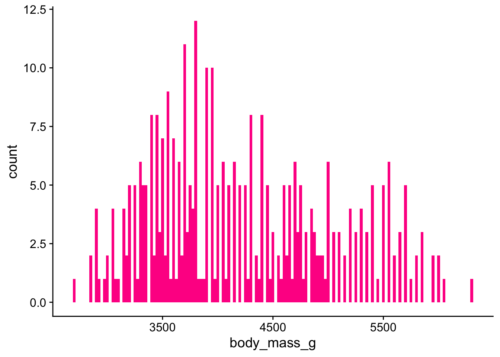
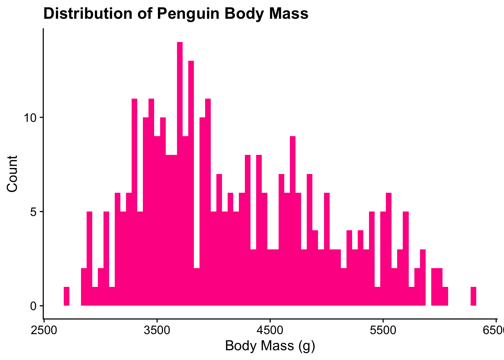
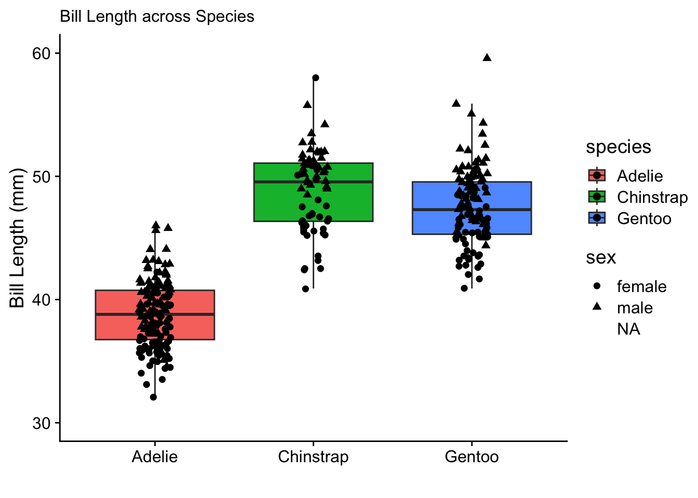

library(tidyverse)
library(cowplot)
library(palmerpenguins)
library(taylor)Data Visualization with ggplot2
About the activity
Access the Quarto document here.
Download the raw file.
Open it in RStudio.
We will work our way through this quarto document together during class. The activity will cover plotting data with ggplot2!
Load the Packages
The tidyverse library includes ggplot2 and I added cowplot to make the plots prettier. We will use data from the palmerpenguins and the taylor packages.
Histogram & Density plots
Use the palmerpenguins data to plot some histograms. Histograms are good for evaluating the distribution of continuous data.
1. How would you describe the distributions in the penguins dataset? Are they uni-modal or bi-modal or other?
penguins |> head()# A tibble: 6 × 8
species island bill_length_mm bill_depth_mm flipper_length_mm body_mass_g
<fct> <fct> <dbl> <dbl> <int> <int>
1 Adelie Torgersen 39.1 18.7 181 3750
2 Adelie Torgersen 39.5 17.4 186 3800
3 Adelie Torgersen 40.3 18 195 3250
4 Adelie Torgersen NA NA NA NA
5 Adelie Torgersen 36.7 19.3 193 3450
6 Adelie Torgersen 39.3 20.6 190 3650
# ℹ 2 more variables: sex <fct>, year <int># plot the distribution of the penguins' body mass using geom_histogram()
ggplot(penguins, aes(x = body_mass_g)) + geom_histogram()`stat_bin()` using `bins = 30`. Pick better value with `binwidth`.Warning: Removed 2 rows containing non-finite outside the scale range
(`stat_bin()`).
# lets make the plot and the code a little more pretty (note tidy syntax is to put each element on a new line, the "+" wraps the text)
ggplot(penguins, aes(x = body_mass_g)) +
geom_histogram(fill = "deeppink") +
theme_cowplot()`stat_bin()` using `bins = 30`. Pick better value with `binwidth`.Warning: Removed 2 rows containing non-finite outside the scale range
(`stat_bin()`).
# histograms are impacted by the "bin" or how each bar is averaging (how thick the bars are). We can change that will `bin` or `binwidth`
ggplot(penguins, aes(x = body_mass_g)) +
geom_histogram(binwidth = 500, fill = "deeppink") +
theme_cowplot()Warning: Removed 2 rows containing non-finite outside the scale range
(`stat_bin()`).
# add some more labels
ggplot(penguins, aes(x = body_mass_g)) +
geom_histogram(binwidth = 25, fill = "deeppink") +
theme_cowplot() +
labs(title = "Distribution of Penguin Body Mass",
x = "Body Mass (g)",
y ="Count")Warning: Removed 2 rows containing non-finite outside the scale range
(`stat_bin()`).
# color by species to gain insight into the distribution
ggplot(penguins, aes(x = body_mass_g, fill = species)) +
geom_histogram(binwidth = 100) +
theme_cowplot() + facet_wrap(~species) +
labs(title = "Distribution of Penguin Body Mass",
x = "Body Mass (g)",
y ="Count")Warning: Removed 2 rows containing non-finite outside the scale range
(`stat_bin()`).
2. Plot the other penguin bill and flipper measurements? What are their distribution? How does the binwidth change the interpretation of the distributions? Are they bi-modal or uni-modal?
penguins |> head()# A tibble: 6 × 8
species island bill_length_mm bill_depth_mm flipper_length_mm body_mass_g
<fct> <fct> <dbl> <dbl> <int> <int>
1 Adelie Torgersen 39.1 18.7 181 3750
2 Adelie Torgersen 39.5 17.4 186 3800
3 Adelie Torgersen 40.3 18 195 3250
4 Adelie Torgersen NA NA NA NA
5 Adelie Torgersen 36.7 19.3 193 3450
6 Adelie Torgersen 39.3 20.6 190 3650
# ℹ 2 more variables: sex <fct>, year <int>3. A benefit of geom_density() is that the plots are not dependent on the binsize. Compare the histograms and the density plots for each data feature.
# Hint. Change geom_histogram to geom_density4. Where do you think the bimodal distributions may come from? Lets check the distribution across different species. Add fill = species to the aes() so we can see how the distributions change across species of penguins.
# Hint: add an `alpha` to the geom_density to sets the opacity of the density plots. Barplots of Categorical data
Another type of distribution and count data is of categorical data. Count data for categorical data is best displayed in barplots
# some tidying
taylor_album_songs$key <- str_sub(taylor_album_songs$key_name, 1, 1)
taylor_album_songs$album_name <- fct_inorder(taylor_album_songs$album_name)
# Lets look at the distribution of muscal keys usage across TS albums.
# Now lest look at the proportions5. What factors distinguish Ideal cut versus Good cut diamonds?
Using the diamonds dataset, determine the distribution of the cut, color, and clarity of diamonds.
# Hint: first look at the distribution of each characteristic
# Hint: Now plot two of the variables using geom_bar() and the other as a fill colorBoxplots!
The best way to view group differences.
6. Does the bill length and depth, the flipper length, or the body mass differ across species of penguins?
Using the penguins dataset use geom_boxplot() to find out if there is a difference in the penguin features between different species of penguins
# Hint: plot the species as a categorical feature and the bill and the bill adn flipper as the continuous variable. Isn’t this better than bar graphs??!!!
Note: geom_violin() can also be a good alternative to a boxplot if you have a very large sample size, such as in single cell RNA sequencing or flow cytometry data. Try the plots as a geom_violin() instead of geom_boxplot().
Scatter and Line Plots
Looking at 2 continuous variables and their relationship to one another.
7. Using the iris dataset use to find out the relationship between Sepal.Length, Sepal.Width, Petal.Length, and Petal.Widthand how that relationship changes across differentSpecies` of iris flowers.
iris |> head() Sepal.Length Sepal.Width Petal.Length Petal.Width Species
1 5.1 3.5 1.4 0.2 setosa
2 4.9 3.0 1.4 0.2 setosa
3 4.7 3.2 1.3 0.2 setosa
4 4.6 3.1 1.5 0.2 setosa
5 5.0 3.6 1.4 0.2 setosa
6 5.4 3.9 1.7 0.4 setosaggplot(iris, aes(x = Sepal.Length, y = Sepal.Width, color = Species, group = Species)) +
geom_point() +
geom_smooth(method = lm) +
theme_cowplot() +
labs( x = "Sepal Length (mm)", y= "Sepal Width (mm)")`geom_smooth()` using formula = 'y ~ x'
ggplot(iris, aes(x = Petal.Length, y = Petal.Width, color = Species, group = Species)) +
geom_point() +
geom_smooth(method = lm) +
theme_cowplot() +
labs( x = "Petal Length (mm)", y= "Petal Width (mm)")`geom_smooth()` using formula = 'y ~ x'
8. Now use the ChickWeight data to determine which Diet lead to the greatest weight gain over Time. Remember to take into account repeated measures across Chick
sessionInfo()R version 4.2.3 (2023-03-15)
Platform: x86_64-pc-linux-gnu (64-bit)
Running under: Ubuntu 24.04.2 LTS
Matrix products: default
BLAS: /usr/lib/x86_64-linux-gnu/openblas-pthread/libblas.so.3
LAPACK: /usr/lib/x86_64-linux-gnu/openblas-pthread/libopenblasp-r0.3.26.so
locale:
[1] LC_CTYPE=C.UTF-8 LC_NUMERIC=C LC_TIME=C.UTF-8
[4] LC_COLLATE=C.UTF-8 LC_MONETARY=C.UTF-8 LC_MESSAGES=C.UTF-8
[7] LC_PAPER=C.UTF-8 LC_NAME=C LC_ADDRESS=C
[10] LC_TELEPHONE=C LC_MEASUREMENT=C.UTF-8 LC_IDENTIFICATION=C
attached base packages:
[1] stats graphics grDevices utils datasets methods base
other attached packages:
[1] taylor_3.2.0 palmerpenguins_0.1.1 cowplot_1.2.0
[4] lubridate_1.9.4 forcats_1.0.0 stringr_1.5.1
[7] dplyr_1.1.4 purrr_1.0.4 readr_2.1.5
[10] tidyr_1.3.1 tibble_3.3.0 ggplot2_3.5.2
[13] tidyverse_2.0.0
loaded via a namespace (and not attached):
[1] pillar_1.11.0 compiler_4.2.3 RColorBrewer_1.1-3 tools_4.2.3
[5] digest_0.6.37 lattice_0.20-45 nlme_3.1-162 jsonlite_2.0.0
[9] evaluate_1.0.4 lifecycle_1.0.4 gtable_0.3.6 timechange_0.3.0
[13] mgcv_1.8-42 pkgconfig_2.0.3 rlang_1.1.6 Matrix_1.5-3
[17] cli_3.6.5 yaml_2.3.10 xfun_0.52 fastmap_1.2.0
[21] withr_3.0.2 knitr_1.50 generics_0.1.4 vctrs_0.6.5
[25] hms_1.1.3 grid_4.2.3 tidyselect_1.2.1 glue_1.8.0
[29] R6_2.6.1 rmarkdown_2.29 farver_2.1.2 tzdb_0.5.0
[33] magrittr_2.0.3 splines_4.2.3 scales_1.4.0 htmltools_0.5.8.1
[37] labeling_0.4.3 utf8_1.2.6 stringi_1.8.7